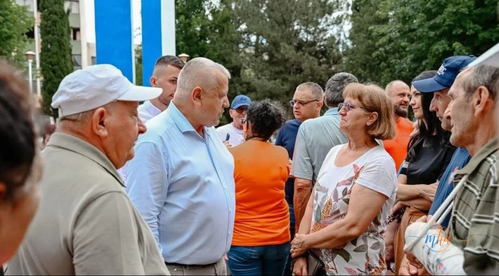
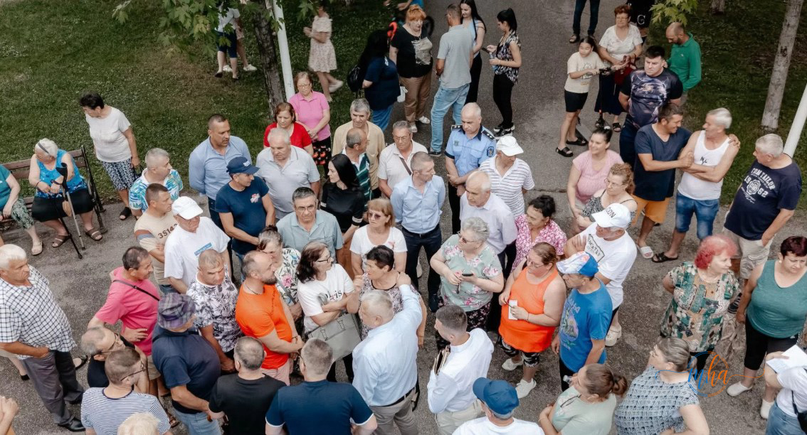

Primarul municipiului Drobeta-Turnu Severin, Marius Screciu, a continuat și în această săptămână seria întâlnirilor directe cu cetățenii, ajungând în zona Parcului Cildro și pe străzile Topolniței și Traian. Discuțiile fac parte dintr-un program mai amplu prin care administrația locală își propune să rămână conectată direct cu nevoile locuitorilor din toate cartierele orașului.
Probleme din cartiere, în centrul discuțiilor
Discuțiile purtate de primar cu cetățenii au vizat atât probleme punctuale semnalate de locuitori, cât și aspecte care țin de viața de zi cu zi din cartiere. Printre principalele subiecte abordate s-au numărat activitatea asociațiilor de proprietari, starea unor zone dintre blocuri, parcările, întreținerea spațiilor verzi și alte probleme specifice cartierului.
Întâlnirile directe cu cetățenii au devenit, în ultima perioadă, un instrument constant folosit de administrația locală pentru a identifica rapid problemele din teren și pentru a stabili priorități în funcție de nevoile reale ale comunității, nu doar pe baza sesizărilor scrise.
Mesajul transmis de primarul Marius Screciu
„Oamenii sunt cea mai importantă resursă a orașului.
Am continuat în această seară întâlnirile cu cetățenii și am ajuns în zona Parcului Cildro, străzile Topolniței și Traian.
Pentru mine, astfel de întâlniri sunt extrem de importante. Dincolo de proiecte și investiții, un oraș se dezvoltă atunci când administrația rămâne aproape de oameni, îi ascultă și ține cont de opiniile lor.
Severinul a evoluat mult în ultimii ani, iar acest lucru s-a întâmplat și datorită oamenilor care au avut încredere, au venit cu idei și au ales să se implice.
Vă mulțumesc pentru primire și pentru fiecare discuție avută în această seară. Continuăm să construim împreună orașul pe care ni-l dorim cu toții”, a transmis Marius Screciu.
O administrație apropiată de cetățeni
Seria întâlnirilor cu locuitorii din diverse zone ale municipiului confirmă o direcție asumată de actuala administrație locală: dialogul direct cu cetățenii, în cartiere, nu doar la sediul Primăriei. Acest tip de interacțiune permite identificarea mai rapidă a problemelor specifice fiecărei zone și, în același timp, creează un canal de comunicare deschis între autoritatea locală și comunitate.
Reprezentanții asociațiilor de proprietari, prezenți la discuții, au avut ocazia să prezinte direct edilului problemele cu care se confruntă blocurile pe care le administrează, de la întreținerea spațiilor comune până la nevoia unor investiții punctuale în infrastructura din cartier.
Administrația locală a transmis că seria acestor întâlniri va continua și în perioada următoare, în alte zone ale municipiului Drobeta-Turnu Severin, ca parte a unui efort permanent de a păstra legătura directă cu cetățenii.

